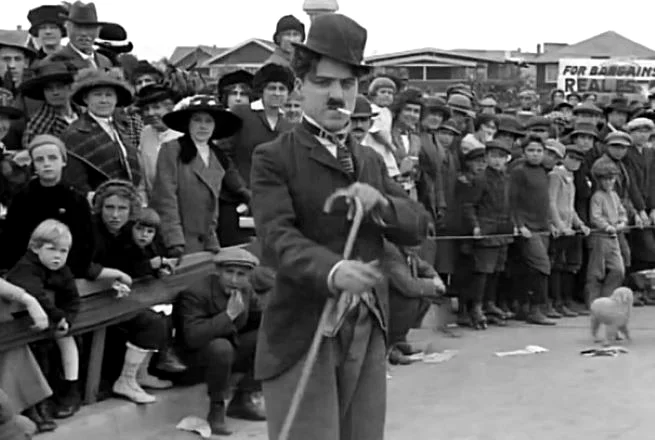
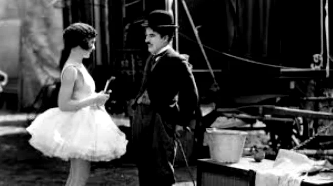
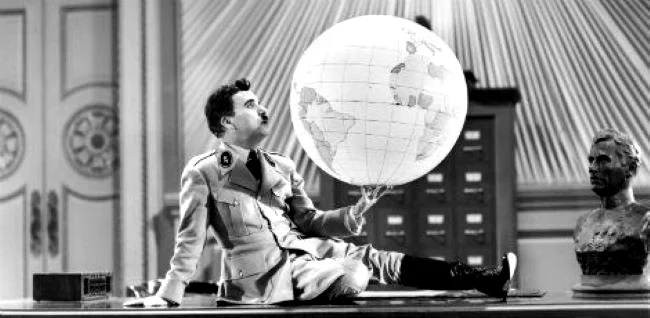

Infância
Charles Spencer Chaplin Jr. nasceu em Londres, Inglaterra, no dia 16 de abril de 1889. Seu pai Charles Spencer Chaplin, era vocalista e ator e sua mãe Hannah Chaplin, era cantora e atriz. Seus pais se separam antes de Charles completar três anos. Em 1894 com apenas cinco anos Chaplin subiu ao palco e cantou a música "Jack Jones".
Seu pai era alcoólatra, tinha pouco contato com o filho e morreu de cirrose hepática em 1901. Sua mãe foi internada em um asilo e Chaplin foi levado para um orfanato e depois transferido para uma escola de crianças pobres.
Primeiro Filme de Sucesso de Charles Chaplin
Em 1908, com 19 anos, Charles Chaplin começou a trabalhar no teatro de variedades fazendo sucesso como mímico. Em 1910, em uma turnê nos Estados Unidos com a trupe de Fred Karmo, foi visto por um produtor cinematográfico e em 1913 já estreava como ator de cinema da Keystone Film Company. No final de 1914, Chaplin foi contratado pela Essanay, recebendo um alto salário, junto com sua própria unidade de produção. Em 1915, ele produziu a comédia “The Tramp” (O Vagabundo) quando criou o seu famoso personagem "o vagabundo Carlitos".

O Vagabundo - 1915
Carlitos era um andarilho, pobretão, com maneiras refinadas e a dignidade de um cavalheiro, vestia-se com casaco esgarçado, calças e sapatos desgastados e mais largo que o seu número, um chapéu-coco, uma bengala e seu marcante bigodinho. O personagem humilde e galante passou a ser a figura central de diversos filmes de Chaplin.
Produtora United Artists
Em 1919, Charles Chaplin fundou sua própria produtora, a United Artists, junto com Mary Pickford, Douglas Fairbanks e D. W. Griffith. Com seu personagem “Carlitos”, criou filmes com uma mescla de humor, poesia, ternura e crítica social, os mais longos do período, entre eles:
- The Kid (O Garoto,1921) que conta a história de um bebê que acaba ficando aos cuidados de um vagabundo
- The Gold Rush (Em Busca do Ouro, 1925) que se passa no Alasca em plena corrida do ouro
- The Circus (O Circo, 1928)
Em 1927, com a chegada do cinema falado, Charles Chaplin se opôs ao novo modelo de fazer cinema e, continuou a criar obras-primas baseadas em suas mímicas. São dessa época:

O Circo -1928
- City Lights (Luzes da Cidade, 1931) que conta a história do vagabundo que se finge de milionário para impressionar uma florista cega, por qual se apaixonou
- Modern Times (Tempos Modernos, 1936) que satiriza a mecanização da modernidade.
Primeiro Filme Falado de Chaplin
O primeiro filme falado de Charles Chaplin foi The Great Dictator (1940) (O Grande Ditador), lançado no dia 15 de outubro de 1940, o filme faz uma sátira ao nazismo e ao fascismo. O filme recebeu cinco indicações ao Oscar em 1941, nas categorias de melhor filme, melhor ator para Charles Chaplin, melhor roteiro original, melhor trilha sonora e melhor ator coadjuvante para Jack Oakle.

O Grande Ditador - 1940
Charles Chaplin teve uma vida sentimental intensa, casou-se quatro vezes, os três primeiros com estrelas de seus filmes, das quais se divorciou com escândalos: Milded Harris, Lita Grey e Paulette Goddard. Com 54 anos, conheceu Oona, a filha do teatrólogo irlandês Eugene O'Neill, de apenas 18 anos, com quem se casou, teve seis filhos e com ela viveu até o fim da vida.
Fuga dos Estados Unidos
Apesar da grande popularidade de Charles Chaplin e do sucesso de seus filmes, muitas de suas ideias eram incompatíveis com os setores conservadores da sociedade norte-americana. Seu filme Shoulder Arms” (Ombros Armas!) de 1918, provocou protestos de pretensos patriotas. Acusado de comunismo, foi perseguido pelo Macarthismo. Em 1952 abandonou os Estados Unidos, indo morar Corsier-sur-Vevey, na Suíça.
Em 1972, Charles Chaplin voltou aos Estados Unidos para receber o "Prêmio Especial da Academia de Artes e Ciências Cinematográficas". Em 1975, foi agraciado pela Rainha Elizabeth II com o título de Sir. Charles Chaplin faleceu em Corsier-sur-Vevey, Suíça, no dia 25 de dezembro de 1977.